Fab Academy Tutorials & References
Process
Tools & Software
Eagle
Designing Schmetic and Board for PCB.
Modela MDX-20 3D Milling Machine
Milling of pcb (png to milling)
RGB
I made this RGB as output so it can be used in Network Communication week also. In this output circuit I have used Atty Tiny 44.
SMD Components
Attytiny 44
capcitor 1Uf
resistor
header pin
rgb (cathode)
Step by Step Process
- Creating schmetic in Eagle by adding components
- Connecting them and making circuit
- Shifting to Board
- Setting postion of components as required
- Routing it step by step
- Rearranging to achive 100% routing
- Using Ratsnet and Auto routing options
- DRC rule check
- Changing Layers for exporting to Image
- Check no extra layer should be added
- Use 400 dpi and monochrome
- PNG file would be exported to location
- Milling file is ready but we still need cutting traces for border
- Open file to Photoshop Convert it to RGB
- In my case rectangle so I increased cavas size
- Created two different PNG 1. Milling 2. Cutting Traces
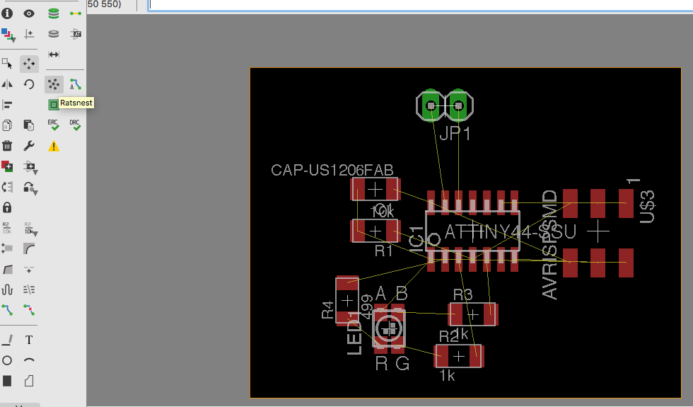 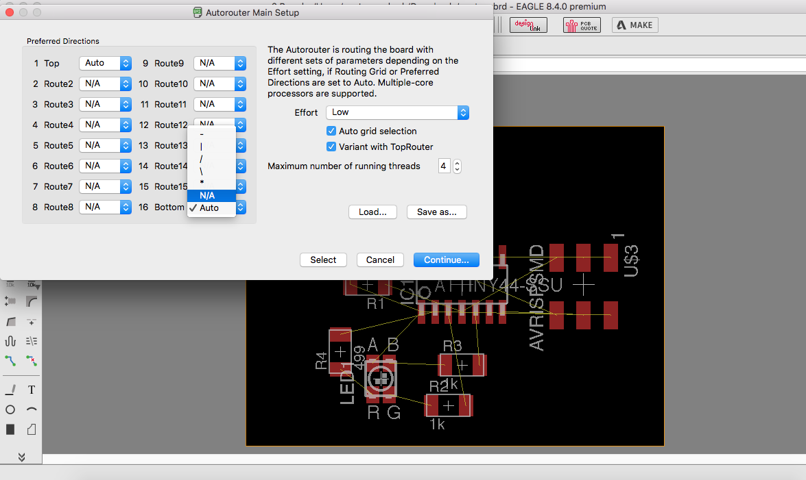
text
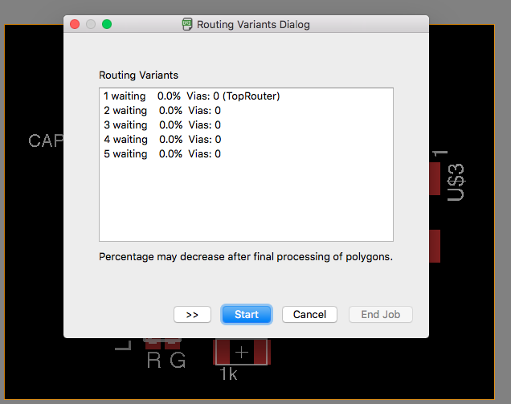 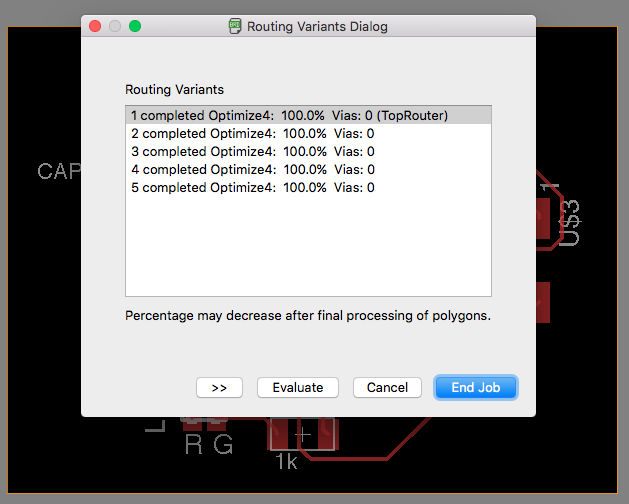
text
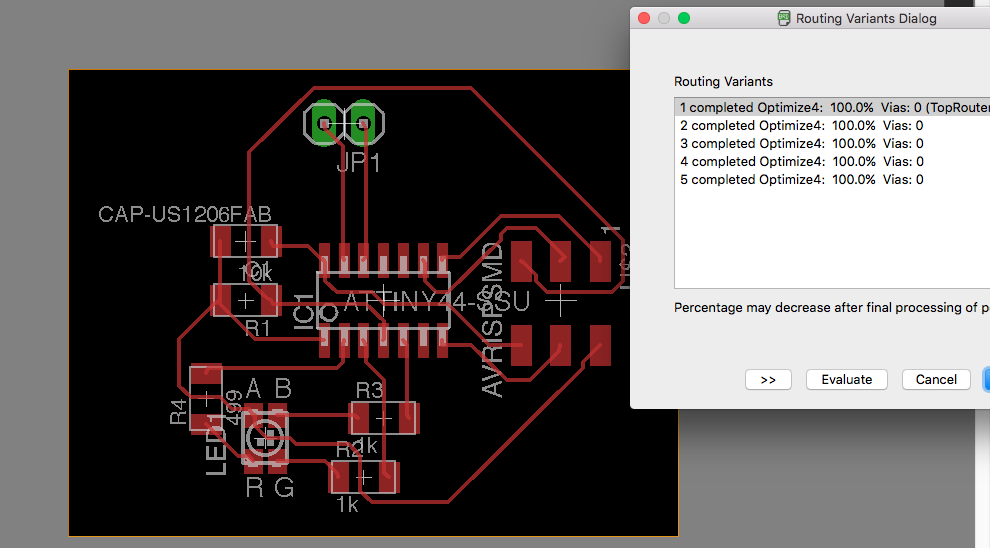 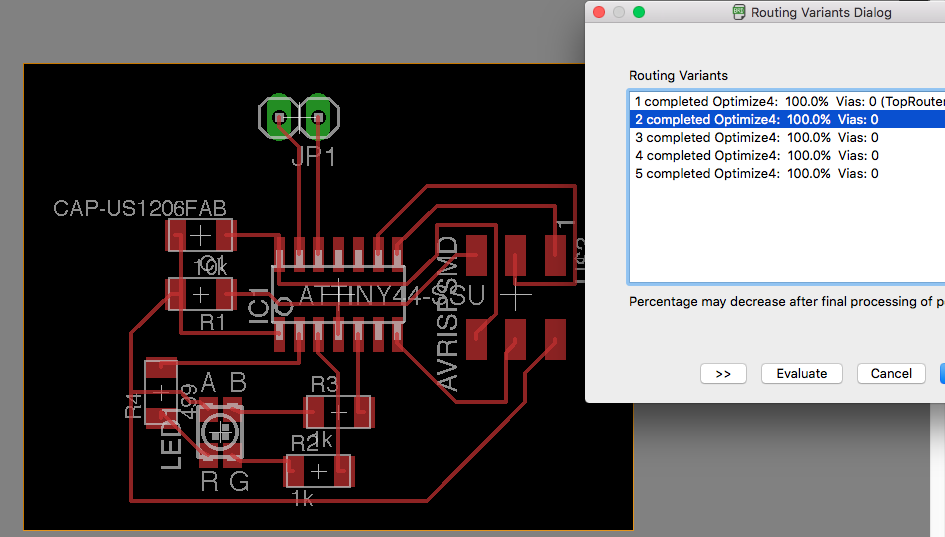
text
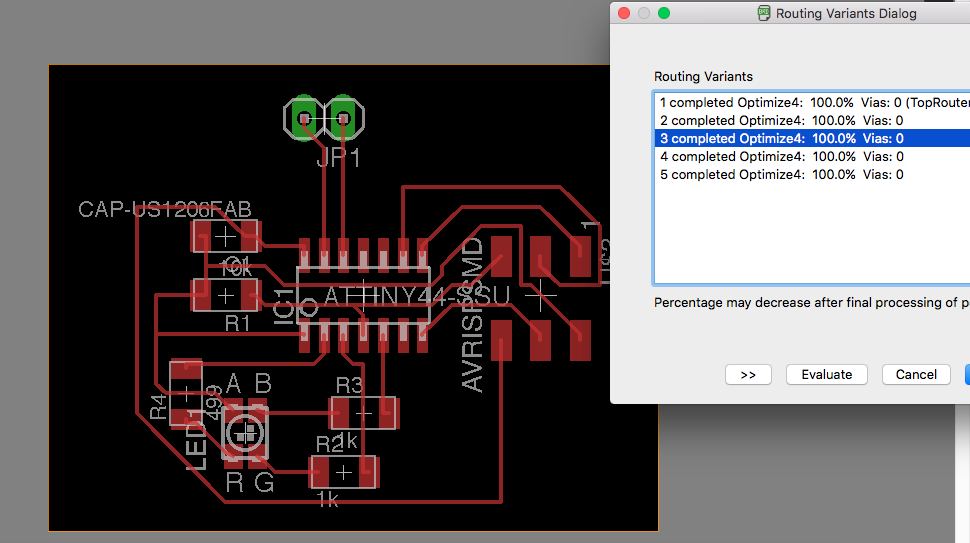 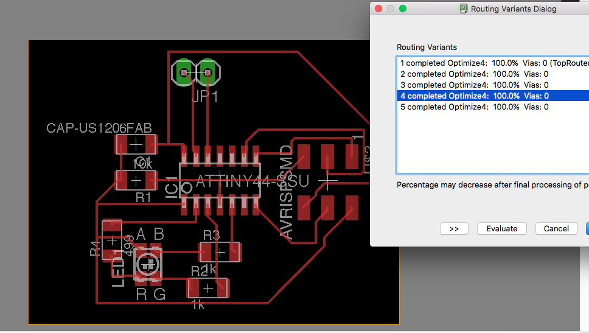
text
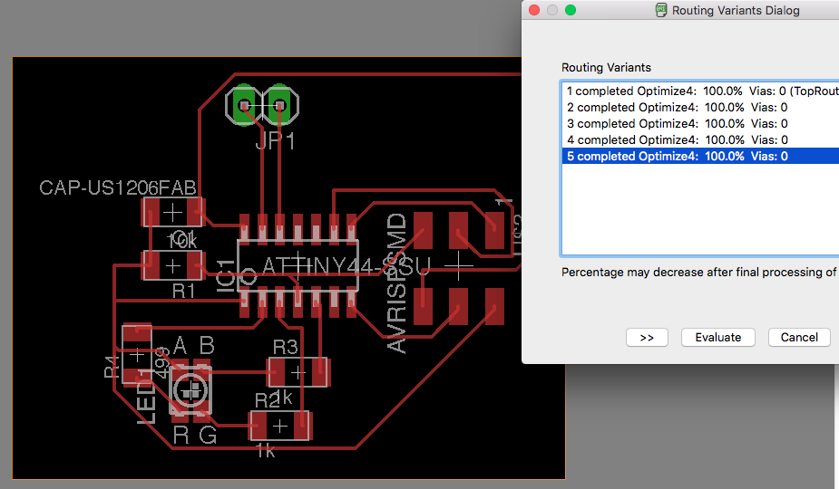 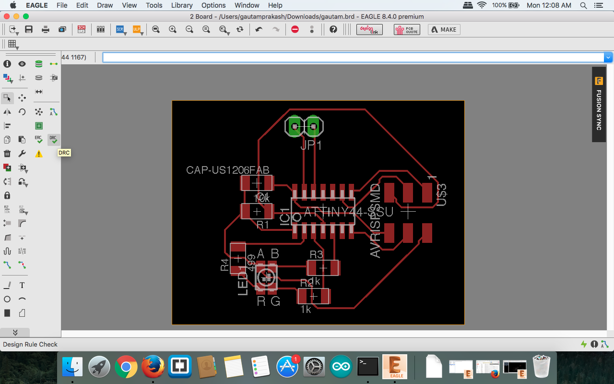
text
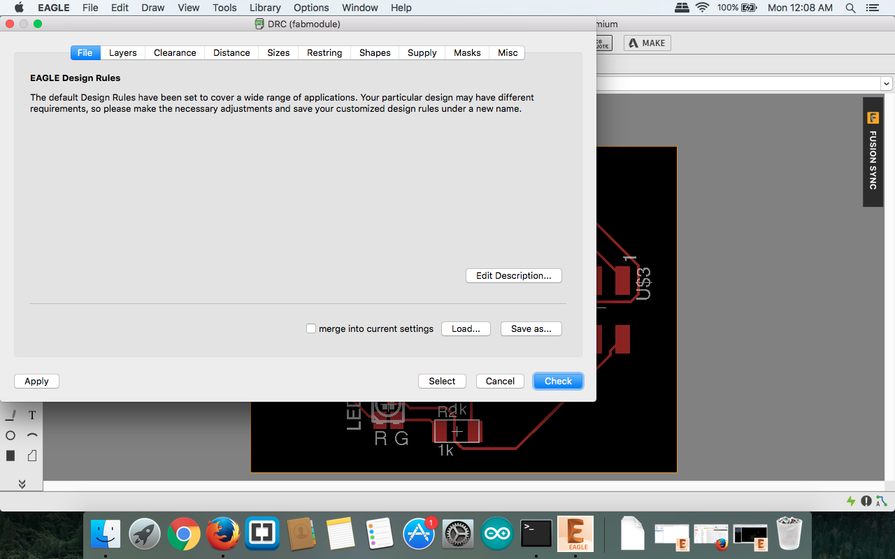 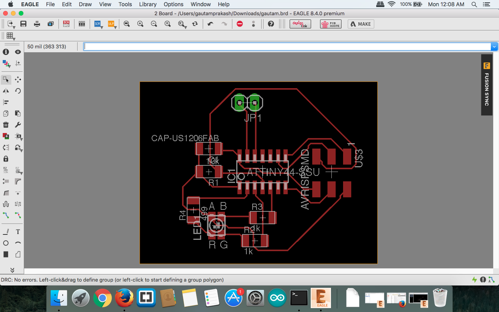
text
Milling & Traces

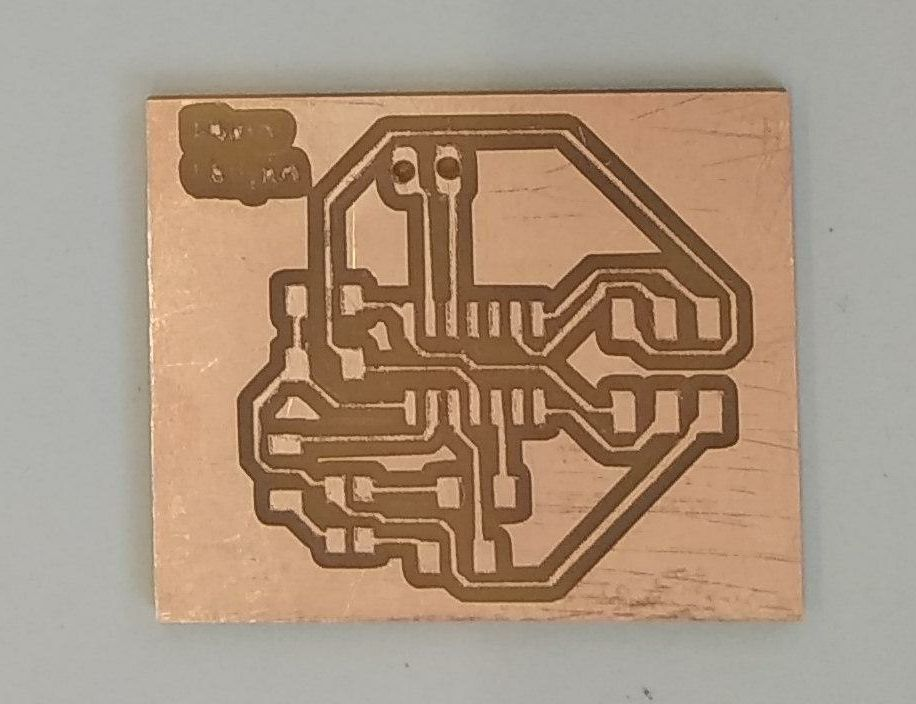
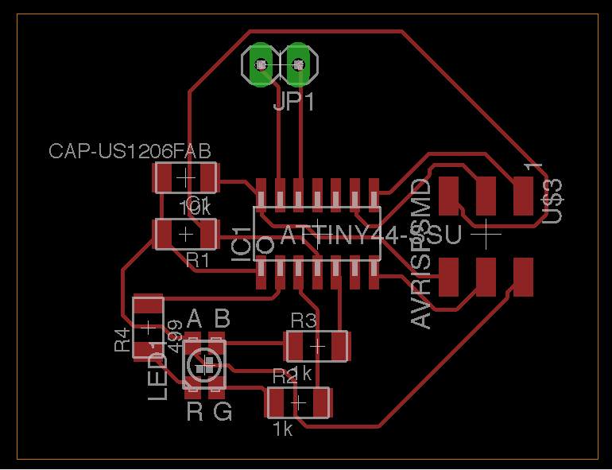
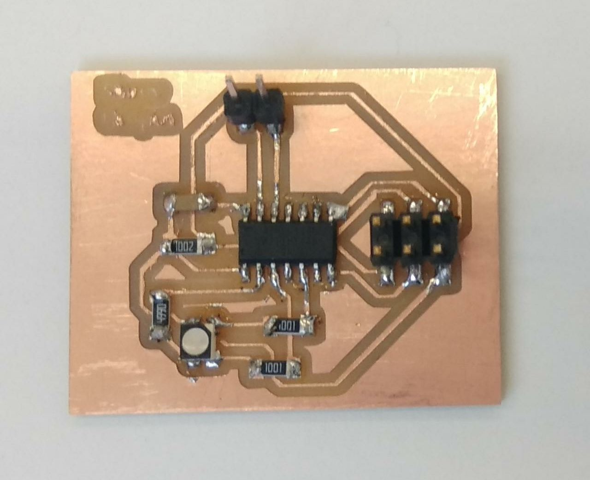
Output Device in Final project
In Final project need was to teach students about different output devices.
LCD which can print TEXT and Sensor reading values will be perfect for practical with students.
Ultrasonic ( Distance ) and Servo as Wheel for Obstacle Avoider
Basic sensor and LCD display for showing Sensor Value
As One of basic sensor Ultrasonic sensor which is taking input and according to that input Servo motor runs.
Logic of Output device is when Distance of Ultrasonic comes as less than 7 cm.
Right Servo motor will move backward and left will move forward. which output is turning right .
In this project Satsha kit was used controlling output.
LED Array from FAB Academy
Go through lecture
http://academy.cba.mit.edu/classes/output_devices/index.html
 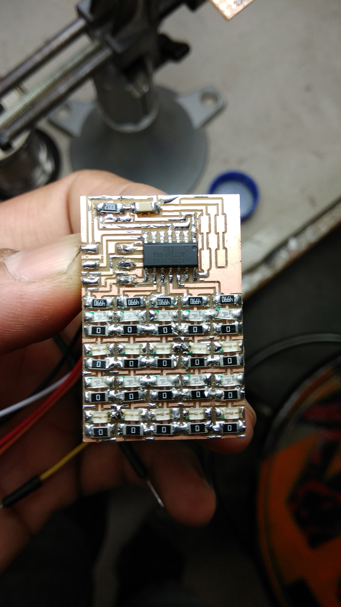
Examples are Given.
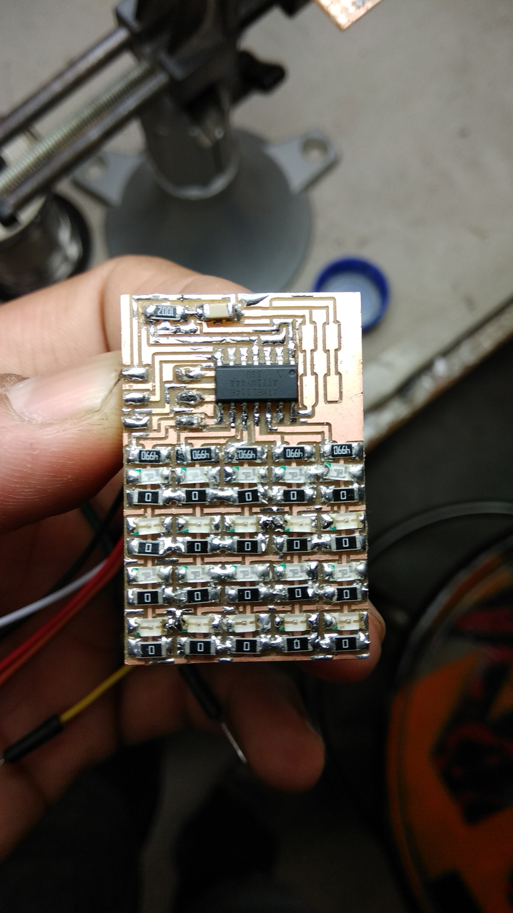
Examples are Given.
LED array Files and sch is given there.
Wanted to used LED array for final year but pin and board design was getting more complex. Then I shifted to Ultrasonic as input and Servo as output.
Input as Ultrasonic and output as LCD
{kind=link}